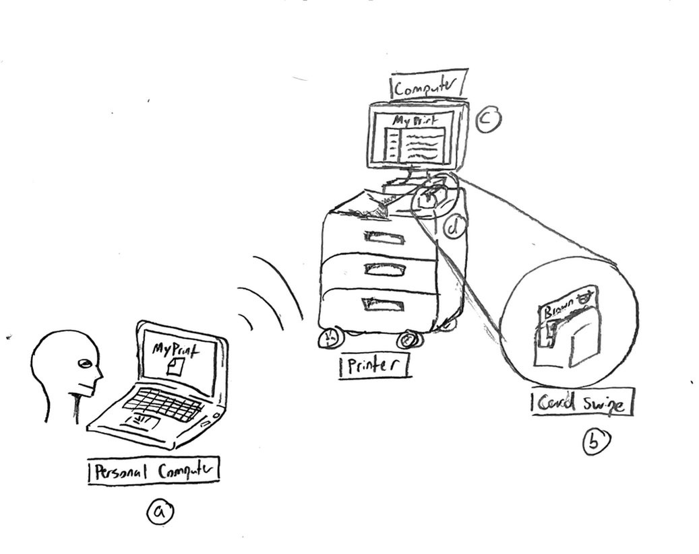
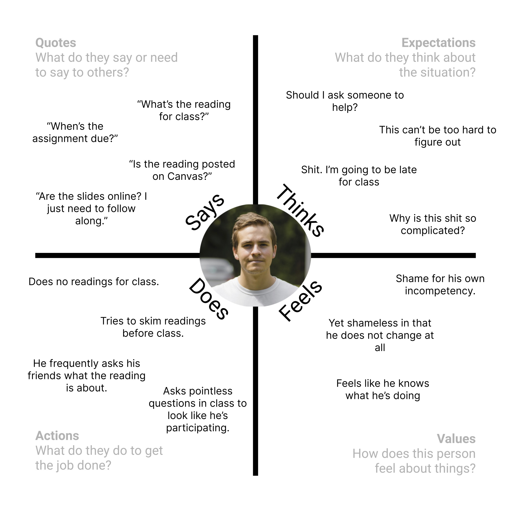
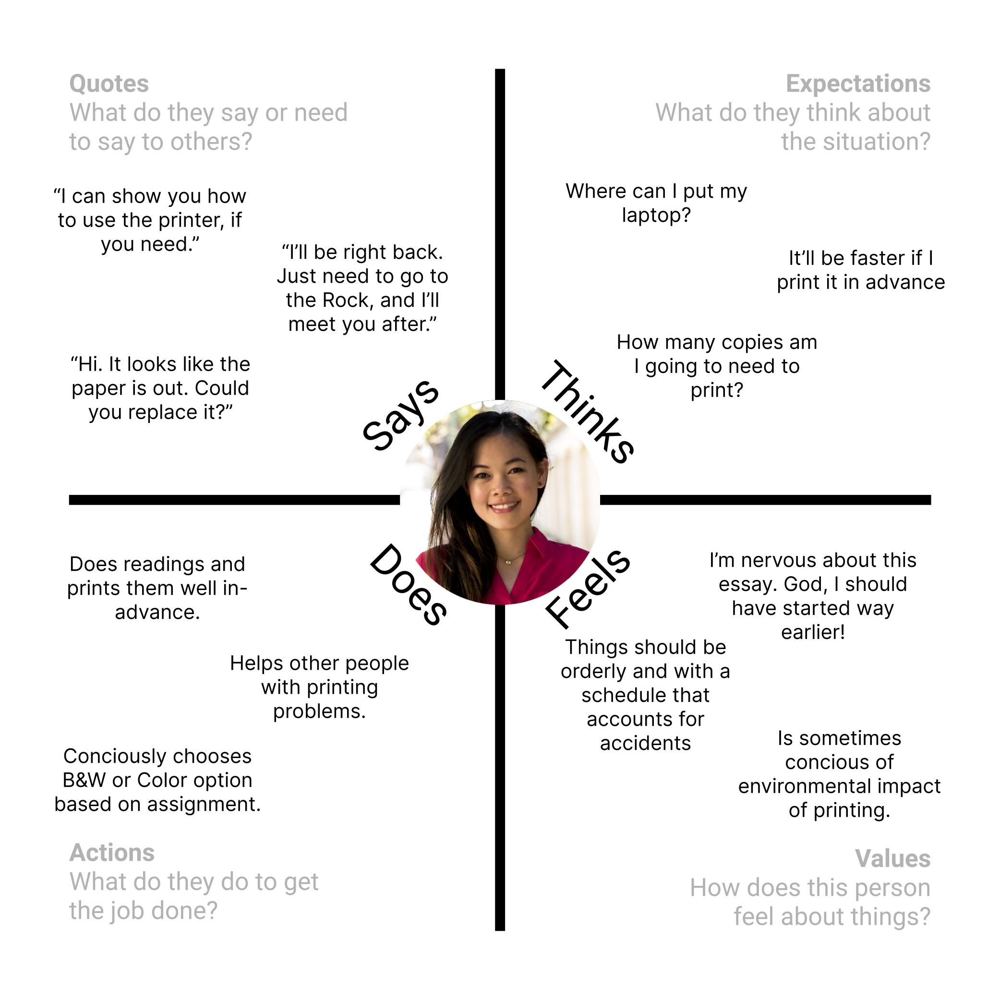
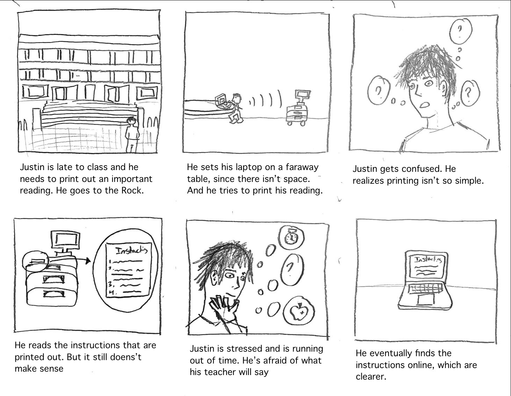
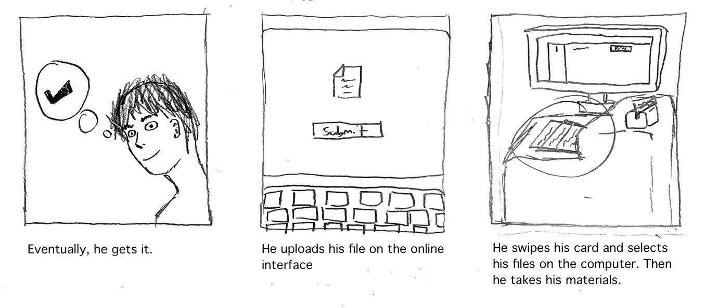

<!DOCTYPE html>
<html>
    <title>Rockefeller Library Printer Evaluation</title>
    <link rel="stylesheet" type="text/css" href="style.css">
</html>

<body>
    <h1 id="site-title">Observations on the Rockefeller Library Printer</h1>

    <div id="p-1">
        <h1 id="heading-title">Part 1: Preparation</h1>
        <br>
        <p id="p-text">The interface I chose was the printers that were located at the Rockefeller Library. I stationed myself at the printers to observe a few people and interviewed them about their user experience.</p>
        <br>
        <p id="p2-text">Here's what I asked:</p>
        <br>
        <h2 id="question-text">"If you don’t mind telling, what did you print out?"</h2>
        <br>
        <h2 id="question-text">"Have you printed using the Rock’s printer’s before?"</h2>
        <br>
        <h2 id="question-text">"Did you ask someone for help printing?"</h2>
        <br>
        <h2 id="question-text">"Did you read any online instructions/information? How about the printed instructions?"</h2>
        <br>
        <h2 id="question-text">"How easy was it to understand the printing procedure?"</h2>
        <br>
        <h2 id="question-text">"Did you choose to print with color or black and white? Did you know that you could do both?"</h2>
        <br>
        <p id="p2-text">The following shows how the printer works:</p>
        <br>
        
        <p id="p-text">(a) A user uploads their file on a personal computer</p>
        <p id="p-text">(b) A user can swipe a card to start their printing job (or they can do it from their computer)</p>
        <p id="p-text">(c) This is the computer to see the printing jobs</p>
        <p id="p-text">(d) This is the actual printer, where your documents can be found</p>
    </div>

    <div id="p-2">
        <h1 id="heading-title">Part 2: Observations</h1>

        <h2 id="question-text">User 1: Jenna</h2>
        <p id="p-text">- Jenna places her laptop on a faraway desk, then typed on her computer</p>
        <p id="p-text">- She was on her computer for maybe a minute or two</p>
        <p id="p-text">- She then waited for the printed sheets to come out</p>
        <br>
        <h2 id="question-text">Question Summary:</h2>
        <p id="p-text">- She printed out a CLPS essay</p>
        <p id="p-text">- Jenna has printed in the Rock before</p>
        <p id="p-text">- She didn’t ask someone to help her print this time, but when she first learned how to print, she did. Back then, she also read online instructions</p>
        <p id="p-text">- She says at first it was a little confusing to learn, but is pretty easy after that</p>
        <p id="p-text">- She printed black and white, and knows how to do both</p>
        <br>

        <h2 id="question-text">User 2: Jeremy</h2>
        <p id="p-text">- Jeremy looks around and tries to read the instructions.</p>
        <p id="p-text">- He holds his computer with his elbow and scrolls through some website</p>
        <p id="p-text">- He scrolls for a while and it looks like he’s reading</p>
        <p id="p-text">- He swipes his card and his items begin to print</p>
        <br>
        <h2 id="question-text">Question Summary:</h2>
        <p id="p-text">- He needed to print out a reading for a class he had soon</p>
        <p id="p-text">- He had never printed at the Rock before</p>
        <p id="p-text">- He asked the lady at the front where the printers were, and he read the instructions that were printed in front of him</p>
        <p id="p-text">- He said it was confusing to understand. But once he reached the online instructions, it made sense</p>
        <p id="p-text">- He didn’t know you could print in color</p>
        <br>

        <h2 id="question-text">User 3: Wyatt</h2>
        <p id="p-text">- Wyatt places his laptop on top of the scanning part of the printer, but he prints from the colored printer</p>
        <p id="p-text">- He swipes his card</p>
        <p id="p-text">- He receives his material</p>
        <br>
        <h2 id="question-text">Question Summary:</h2>
        <p id="p-text">- He needed to print a bunch of posters</p>
        <p id="p-text">- He has printed at Sci-Li before, but not the Rock. It’s the same printer</p>
        <p id="p-text">- He had to ask when he first learned how to use the printer</p>
        <p id="p-text">- He said it was confusing. A librarian helped him then</p>
        <p id="p-text">- He knew you could print both in color and black and white</p>
    </div>

    <div id="p-3">
        <h1 id="heading-title2">Part 3: Personas</h1>
        <h2 style="color: white;"id="question-text">From this we can create two personas:</h2>
        <br>
        
        <br>
        
    </div>

    <div id="p-4">
        <h1 id="heading-title2">Part 4: Storyboards</h1>
        
        <br>
        
    </div>
</body>